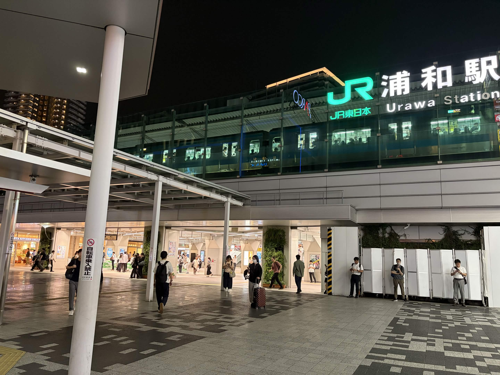

東京都心から電車で約30分。JR各線が乗り入れ、埼玉スタジアムへのアクセスも良好です。
浦和駅はJR京浜東北線・宇都宮線(東北本線)・湘南新宿ラインが停車するターミナル駅。 東京駅・上野駅・新宿駅など都心の主要駅から乗り換えなしでアクセスできます。
| 東京駅から | JR京浜東北線 快速で約30分 |
|---|---|
| 上野駅から | JR宇都宮線(東北本線)で約25分 |
| 新宿駅から | JR湘南新宿ラインで約35分 |
| 大宮駅から | JR京浜東北線で約8分 |
| 停車路線 | JR京浜東北線 / JR宇都宮線(東北本線) / JR湘南新宿ライン |
浦和レッズの本拠地・埼玉スタジアム2〇〇2へは、埼玉高速鉄道の浦和美園駅からのアクセスが便利です。
| 最寄り駅 | 埼玉高速鉄道線「浦和美園」駅 |
|---|---|
| 駅からの所要時間 | 徒歩約15分、または試合日はシャトルバスを運行 |
| 都心からの目安 | 東京メトロ南北線直通で、赤羽岩淵駅から浦和美園駅まで約25分 |
| 浦和駅からの目安 | 浦和駅からバス、または浦和美園駅経由で約40〜50分 |
浦和レッズのホームゲーム開催日は、浦和駅・浦和美園駅ともに大変混雑します。時間に余裕を持った移動をおすすめします。
常磐公園や調神社など、歴史・文教エリアの散策は浦和駅・北浦和駅を起点にすると回りやすくなります。
浦和は比較的平坦な地形が多く、駅周辺のレンタサイクルを利用すれば効率よく街を周遊できます。
歴史・サッカー・うなぎ・街歩き — 浦和の魅力をその足で確かめてください。